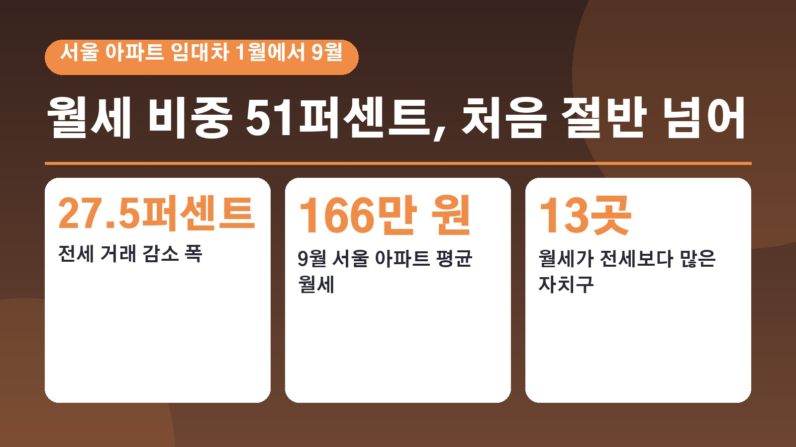
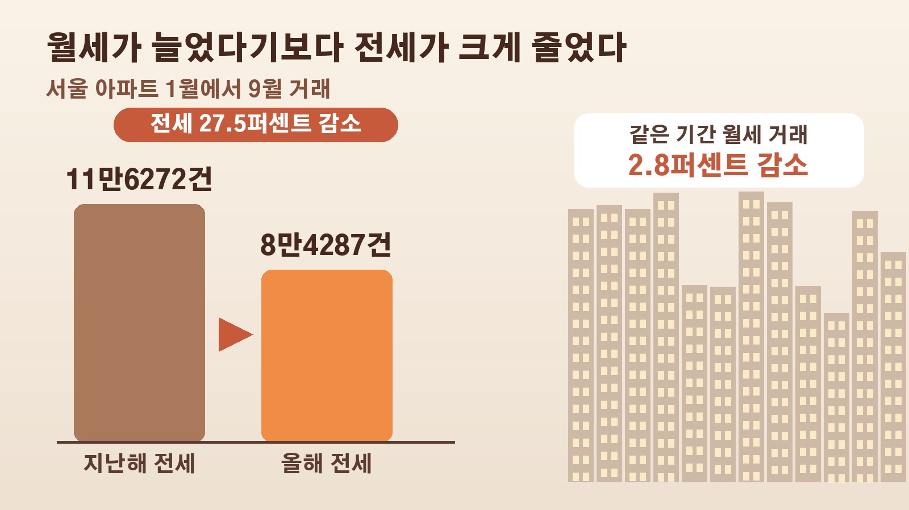

서울 아파트 임대차 거래 절반 넘게 월세가 된 이유, 전세 거래 27.5퍼센트 감소와 평균 월세 166만 원 사이에서 세입자가 볼 숫자

전세 만기가 다가오는데 주변에 전세 매물이 잘 보이지 않거나, 집주인에게서 보증금 일부를 월세로 돌리자는 이야기를 들으신 분들 계실 거예요. 그 체감이 숫자로도 확인됐습니다. 올해 1월부터 9월까지 서울 아파트 임대차 거래에서 월세가 처음으로 절반을 넘었어요. 왜 이런 일이 생겼는지, 월세 부담은 얼마나 커졌는지, 세입자 입장에서 눈여겨볼 부분은 무엇인지 정리해 볼게요.
서울 아파트 월세 비중 51퍼센트, 통계 이후 처음
서울부동산정보광장 자료를 보면 올해 1월부터 9월까지 서울 아파트 전월세 거래는 17만2027건이었고, 이 가운데 월세가 8만7740건으로 51.0퍼센트를 차지했습니다. 전세는 8만4287건으로 월세보다 3453건 적었어요. 1월부터 9월까지 기준으로 월세 비중이 절반을 넘은 건 2011년 통계 집계를 시작한 뒤 처음입니다.
지난해 같은 기간 월세 비중은 43.7퍼센트였으니 1년 사이 7.3퍼센트포인트 오른 셈이에요. 이 흐름이 연말까지 이어지면 연간 기준으로도 처음 월세 비중이 50퍼센트를 넘을 것으로 보입니다. 지금까지 연간 월세 비중이 가장 높았던 해는 지난해의 44.5퍼센트였어요.
월세가 늘었다기보다 전세가 크게 줄었다
여기서 한 가지 짚어 볼 점이 있어요. 월세 계약 자체가 많아진 건 아닙니다. 올해 1월부터 9월까지 월세 거래는 지난해보다 오히려 2.8퍼센트 줄었어요. 대신 전세 거래가 11만6272건에서 8만4287건으로 27.5퍼센트나 줄면서 월세가 차지하는 몫이 커진 겁니다.
전세 거래가 줄어든 배경으로는 전세자금 대출 규제 강화, 전세 매물 부족, 기존 세입자의 계약 갱신 증가 등이 꼽혀요. 공급 쪽 사정도 있습니다. 한겨레 보도에 따르면 올해 서울 아파트 입주 물량은 약 2만7천 호로 지난해 4만7천 호보다 2만 호가량 줄었고, 부동산 경기가 얼어붙었던 2022년과 2023년에 착공이 크게 줄어든 영향이 올해 입주 감소로 이어졌다는 분석이에요.
월세 우위 자치구 13곳, 평균 월세 166만 원
월세가 전세보다 많은 자치구도 크게 늘었어요. 지난해 1월부터 9월까지는 금천, 종로, 중구, 구로 4곳뿐이었는데, 올해는 강남, 강북, 관악, 광진, 동대문, 마포, 영등포, 용산, 중랑이 더해져 13곳이 됐습니다. 서울 25개 자치구 가운데 절반이 넘는 곳이에요.
월세 비중이 가장 높은 곳은 종로구 65.6퍼센트, 그다음이 중랑구 64.9퍼센트, 구로구 63.1퍼센트였습니다. 중랑구는 월세 계약이 지난해 2166건에서 올해 4151건으로 91.6퍼센트 늘어 변화 폭이 가장 컸어요. 반대로 양천구는 42.1퍼센트로 월세 비중이 가장 낮았습니다.

부담도 커졌어요. 한국부동산원 조사에서 9월 서울 아파트 평균 월세는 166만1000원으로 1년 전 144만3000원보다 21만8000원 올랐습니다. 가격을 순서대로 세웠을 때 한가운데 값인 중위 월세도 120만 원에서 140만 원으로 올랐어요.
이사 대신 갱신, 신규와 갱신 보증금 차이
요즘 세입자들은 이사보다 지금 집에 머무르는 쪽을 택하는 경우가 늘었습니다. 머니투데이가 국토교통부 실거래가 자료를 분석한 결과, 서울 아파트 전용면적 60제곱미터 초과 85제곱미터 이하 전월세 거래에서 갱신 계약 비중은 지난해 1월부터 9월까지 42.5퍼센트에서 올해 같은 기간 48.9퍼센트로 올랐고, 신규 계약 비중은 52.3퍼센트에서 48.5퍼센트로 내려왔어요.
이유는 결국 돈입니다. 올해 1월 5일부터 4월 30일까지의 서울 아파트 전세 계약을 보면, 신규 계약의 중위 보증금은 5억8500만 원으로 갱신 계약의 5억3000만 원보다 5500만 원 높았어요. 세입자는 2년 계약이 끝난 뒤 주택임대차보호법상 계약갱신요구권을 한 번 쓸 수 있고, 이때 임대료 인상은 5퍼센트 이내로 묶입니다. 신규 계약에는 이런 상한이 없어서 차이가 생기는 거예요. 다만 갱신요구권을 이미 쓴 세입자는 다음 계약에서 그동안 쌓인 시세 상승을 한꺼번에 마주할 수 있다는 점도 함께 지적됐습니다.
전망과 무주택 세입자가 챙겨 볼 공공임대
앞으로의 흐름에 대해 함영진 우리은행 부동산리서치랩장은 높은 전세대출 이자 부담과 수도권 전셋값 오름세 때문에 전세의 월세 전환이 이어질 것으로 내다봤어요. 한겨레는 최근 입주 물량 흐름으로 볼 때 내년까지 공급 부족이 이어지고, 2028년은 돼야 입주 물량이 예년 수준을 되찾을 것으로 전망했습니다.
정부는 서울과 수도권 공공택지에서 올해 4분기부터 내년 말까지 공적 주택 10만 호 입주를 추진하겠다고 밝힌 상태예요. 한겨레는 무주택 세입자라면 계약갱신요구권 등을 활용해 지금 집에서 버티면서 보편형 공공임대를 노려보는 것도 현실적인 대안이라고 소개했습니다. 보편형 공공임대는 2030년까지 17만5천 호가 공급될 예정이고, 물량의 절반 이상은 무주택 청년에게 먼저 돌아가요. 소득 같은 구체적인 입주 기준은 연말쯤 확정될 예정이라 그때 공고를 확인해 보시면 좋겠습니다.
참고한 기사: 경향신문 서울 아파트 월세 비중 첫 50퍼센트 돌파 1에서 9월 전세 거래 27.5퍼센트 줄어 2026년 10월 20일, 뉴스핌 전세 급감에 뒤집힌 임대차 시장 서울 아파트 월세 첫 50퍼센트 돌파 2026년 10월 20일, 한겨레 아파트도 전세의 월세화 무주택자 보편형 공공임대 노려볼 만 2026년 10월 20일, 머니투데이 전월세난에 이사는 포기 세입자 가둔 전셋값 비자발적 잔류 2026년 10월 20일
태그
서울아파트월세 월세비중 전세의월세화 전세거래감소 평균월세 전월세 계약갱신요구권 갱신계약 보편형공공임대 세입자